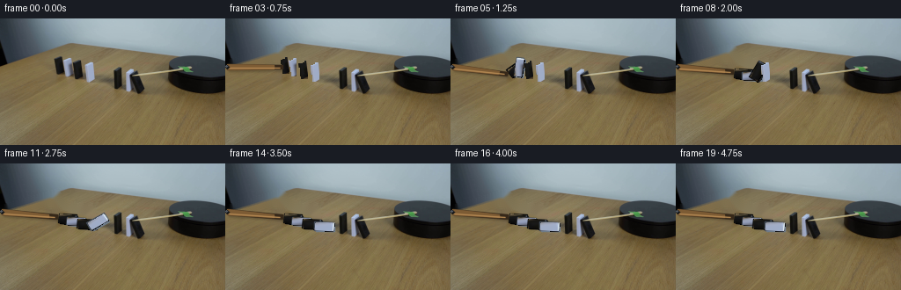
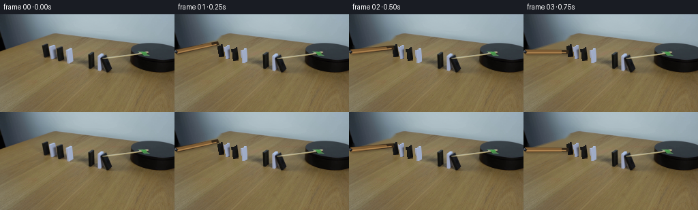

CODING AGENTS AS PIXEL WORLD MODELS
traex/DeepSeek-V4.1-Flash · 0051
点击播放 · 原生 RGB 像素
逐轮保存的候选
回放视频、检查图与代码变化。
每份候选均可单独播放。实际图片检查记录在下方工具轨迹中。
候选 01播放与检查图
点击播放 · 原生 RGB 像素


展开代码变化
--- 上一保存版本
+++ 本次保存版本
@@ -0,0 +1,374 @@
+from pathlib import Path
+import math
+
+import cv2
+import numpy as np
+
+import artifact_io
+
+
+CASE_DIR = Path(__file__).resolve().parent
+SOURCE = cv2.cvtColor(
+ cv2.imread(str(CASE_DIR / "first_frame.png"), cv2.IMREAD_COLOR),
+ cv2.COLOR_BGR2RGB,
+)
+H, W = SOURCE.shape[:2]
+
+
+class Domino:
+ def __init__(self, name, color, box, base, width, height):
+ self.name = name
+ self.color = color
+ self.x0, self.y0, self.x1, self.y1 = box
+ self.base = np.array(base, dtype=np.float32)
+ self.width = float(width)
+ self.height = float(height)
+ self.texture = self._make_texture()
+ self.source_mask = self._make_source_mask()
+
+ def _make_texture(self):
+ pad = 1
+ crop = SOURCE[
+ self.y0 + pad : self.y1 - pad + 1,
+ self.x0 + pad : self.x1 - pad + 1,
+ ]
+ crop = cv2.resize(
+ crop,
+ (max(2, int(round(self.width))), max(2, int(round(self.height)))),
+ interpolation=cv2.INTER_LINEAR,
+ )
+ return crop
+
+ def _make_source_mask(self):
+ roi = SOURCE[self.y0 : self.y1 + 1, self.x0 : self.x1 + 1]
+ r, g, b = [roi[:, :, i].astype(np.int16) for i in range(3)]
+ lum = (r + g + b) // 3
+ if self.color == "black":
+ core = (lum < 72) & (r < 62) & (g < 62) & (b < 68)
+ else:
+ core = ((b > g + 3) & (g > r + 1) & (b > 90)) | (lum > 126)
+ core = core.astype(np.uint8) * 255
+ core = cv2.morphologyEx(
+ core, cv2.MORPH_CLOSE, np.ones((2, 2), np.uint8)
+ )
+ core = cv2.dilate(core, np.ones((2, 2), np.uint8), iterations=1)
+ full = np.zeros((H, W), dtype=np.uint8)
+ full[self.y0 : self.y1 + 1, self.x0 : self.x1 + 1] = core
+ return full
+
+
+DOMINOES = [
+ Domino("near_black", "black", (61, 44, 72, 62), (67.0, 62.0), 10, 19),
+ Domino("near_white", "white", (72, 45, 80, 65), (76.0, 65.0), 8, 20),
+ Domino("middle_black", "black", (83, 48, 93, 68), (88.0, 68.0), 10, 20),
+ Domino("far_white", "white", (97, 50, 106, 71), (101.5, 71.0), 9, 21),
+]
+
+PIVOT = np.array([2.0, 55.0], dtype=np.float32)
+STICK_LENGTH = 63.0
+STICK_WIDTH = 6.0
+STICK_ANGLES_DEG = [-17, -12, -6, 0, 5, 7, 6, 5, 5, 5, 5, 5, 5, 5, 5, 5, 5, 5, 5, 5]
+
+# The first run falls toward the right. The second run is separated by the
+# tabletop gap and remains standing.
+DOMINO_ANGLES_DEG = {
+ "near_black": [0, 0, 0, 0, 18, 55, 82, 93, 95, 95, 95, 95, 95, 95, 95, 95, 95, 95, 95, 95],
+ "near_white": [0, 0, 0, 0, 0, 8, 35, 68, 91, 94, 94, 94, 94, 94, 94, 94, 94, 94, 94, 94],
+ "middle_black": [0, 0, 0, 0, 0, 0, 0, 5, 32, 65, 90, 93, 93, 93, 93, 93, 93, 93, 93, 93],
+ "far_white": [0, 0, 0, 0, 0, 0, 0, 0, 0, 4, 28, 60, 88, 92, 92, 92, 92, 92, 92, 92],
+}
+
+
+def polygon_mask(points):
+ mask = np.zeros((H, W), dtype=np.uint8)
+ pts = np.asarray(points, dtype=np.int32)
+ cv2.fillPoly(mask, [pts], 255)
+ return mask
+
+
+def build_clean_plate():
+ mask = np.zeros((H, W), dtype=np.uint8)
+ for d in DOMINOES:
+ cv2.rectangle(
+ mask,
+ (d.x0 - 2, d.y0 - 2),
+ (d.x1 + 2, d.y1 + 2),
+ 255,
+ -1,
+ )
+
+ tip = PIVOT + STICK_LENGTH * np.array(
+ [math.cos(math.radians(-17)), math.sin(math.radians(-17))]
+ )
+ stick_mask = np.zeros((H, W), dtype=np.uint8)
+ cv2.line(
+ stick_mask,
+ tuple(np.round(PIVOT).astype(int)),
+ tuple(np.round(tip).astype(int)),
+ 255,
+ int(STICK_WIDTH + 8),
+ cv2.LINE_AA,
+ )
+ mask = cv2.bitwise_or(mask, stick_mask)
+ return cv2.inpaint(SOURCE, mask, 3, cv2.INPAINT_TELEA)
+
+
+CLEAN = build_clean_plate()
+
+
+def rotate_points(points, base, angle_deg, squash=1.0):
+ a = math.radians(angle_deg)
+ c, s = math.cos(a), math.sin(a)
+ pts = np.asarray(points, dtype=np.float32)
+ x = pts[:, 0] * c - pts[:, 1] * s * squash
+ y = pts[:, 0] * s + pts[:, 1] * c
+ return np.column_stack((x, y)) + base
+
+
+def domino_quad(d):
+ hw = d.width * 0.5
+ return np.array(
+ [[-hw, -d.height], [hw, -d.height], [hw, 0], [-hw, 0]],
+ dtype=np.float32,
+ )
+
+
+def add_shadow(layer, quad, strength=0.42):
+ shadow = quad + np.array([3.0, 2.5], dtype=np.float32)
+ cv2.fillPoly(shadow, [np.round(shadow).astype(np.int32)], 255, cv2.LINE_AA)
+ # A second offset softens the long cast shadow from a falling piece.
+ spread = np.array(
+ [
+ shadow[0] + (-2.0, 0.8),
+ shadow[1] + (2.5, 0.8),
+ shadow[2] + (2.5, 1.2),
+ shadow[3] + (-2.0, 1.2),
+ ],
+ dtype=np.float32,
+ )
+ cv2.fillPoly(shadow, [np.round(spread).astype(np.int32)], int(255 * strength), cv2.LINE_AA)
+ return shadow
+
+
+def draw_shadow_accumulator(frame, shadow_mask):
+ if not np.any(shadow_mask):
+ return frame
+ soft = cv2.GaussianBlur(shadow_mask, (5, 5), 1.1).astype(np.float32) / 255.0
+ tint = np.array([63.0, 49.0, 30.0], dtype=np.float32)
+ out = frame.astype(np.float32)
+ out = out * (1.0 - soft[..., None] * 0.44)
+ out += tint * soft[..., None] * 0.22
+ return np.clip(out, 0, 255).astype(np.uint8)
+
+
+def draw_textured_quad(frame, texture, quad, color, falling):
+ src_h, src_w = texture.shape[:2]
+ src = np.array(
+ [[0, 0], [src_w - 1, 0], [src_w - 1, src_h - 1], [0, src_h - 1]],
+ dtype=np.float32,
+ )
+ dst = np.asarray(quad, dtype=np.float32)
+
+ # A dark rim and a narrow side face keep the pieces readable at 256x144.
+ center = dst.mean(axis=0)
+ expanded = center + (dst - center) * 1.07
+ rim_color = (9, 10, 11) if color == "black" else (67, 76, 87)
+ cv2.fillPoly(
+ frame,
+ [np.round(expanded).astype(np.int32)],
+ rim_color,
+ cv2.LINE_AA,
+ )
+
+ side_offset = np.array([1.8, 1.2], dtype=np.float32)
+ side = dst + side_offset
+ side_color = (28, 29, 31) if color == "black" else (111, 125, 140)
+ cv2.fillPoly(
+ frame,
+ [np.round(side).astype(np.int32)],
+ side_color,
+ cv2.LINE_AA,
+ )
+
+ transform = cv2.getPerspectiveTransform(src, dst)
+ warped = cv2.warpPerspective(
+ texture,
+ transform,
+ (W, H),
+ flags=cv2.INTER_LINEAR,
+ borderMode=cv2.BORDER_CONSTANT,
+ borderValue=(0, 0, 0),
+ )
+ alpha = np.zeros((H, W), dtype=np.uint8)
+ cv2.fillPoly(
+ alpha,
+ [np.round(dst).astype(np.int32)],
+ 255,
+ cv2.LINE_AA,
+ )
+ alpha = cv2.erode(alpha, np.ones((2, 2), np.uint8), iterations=1)
+ m = alpha.astype(bool)
+ frame[m] = warped[m]
+
+ top_highlight = (74, 82, 94) if color == "black" else (224, 235, 241)
+ left_highlight = (48, 54, 64) if color == "black" else (193, 207, 219)
+ cv2.line(
+ frame,
+ tuple(np.round(dst[0]).astype(int)),
+ tuple(np.round(dst[1]).astype(int)),
+ top_highlight,
+ 1,
+ cv2.LINE_AA,
+ )
+ if not falling:
+ cv2.line(
+ frame,
+ tuple(np.round(dst[0]).astype(int)),
+ tuple(np.round(dst[3]).astype(int)),
+ left_highlight,
+ 1,
+ cv2.LINE_AA,
+ )
+
+
+def composite_upright_source(frame, d):
+ m = d.source_mask.astype(bool)
+ frame[m] = SOURCE[m]
+
+
+def draw_domino(frame, d, angle_deg):
+ quad = rotate_points(domino_quad(d), d.base, angle_deg)
+ draw_textured_quad(frame, d.texture, quad, d.color, angle_deg > 2.0)
+ return quad
+
+
+def stick_points(angle_deg):
+ a = math.radians(angle_deg)
+ axis = np.array([math.cos(a), math.sin(a)], dtype=np.float32)
+ normal = np.array([-axis[1], axis[0]], dtype=np.float32)
+ half = STICK_WIDTH * 0.5
+ tip = PIVOT + axis * STICK_LENGTH
+ return np.array(
+ [
+ PIVOT + normal * half,
+ tip + normal * (half * 0.70),
+ tip - normal * (half * 0.70),
+ PIVOT - normal * half,
+ ],
+ dtype=np.float32,
+ )
+
+
+def draw_stick(frame, angle_deg, shadow_mask=None):
+ quad = stick_points(angle_deg)
+ if shadow_mask is not None:
+ shadow = quad + np.array([2.5, 2.0], dtype=np.float32)
+ cv2.fillPoly(
+ shadow_mask,
+ [np.round(shadow).astype(np.int32)],
+ 255,
+ cv2.LINE_AA,
+ )
+
+ cv2.fillPoly(
+ frame,
+ [np.round(quad).astype(np.int32)],
+ (54, 40, 25),
+ cv2.LINE_AA,
+ )
+ inner = (quad - PIVOT) * 0.84 + PIVOT
+ cv2.fillPoly(
+ frame,
+ [np.round(inner).astype(np.int32)],
+ (124, 91, 52),
+ cv2.LINE_AA,
+ )
+ a = math.radians(angle_deg)
+ axis = np.array([math.cos(a), math.sin(a)], dtype=np.float32)
+ normal = np.array([-axis[1], axis[0]], dtype=np.float32)
+ highlight_start = PIVOT + normal * 1.4 + axis * 2.0
+ highlight_end = PIVOT + axis * (STICK_LENGTH - 3.0) + normal * 1.0
+ cv2.line(
+ frame,
+ tuple(np.round(highlight_start).astype(int)),
+ tuple(np.round(highlight_end).astype(int)),
+ (181, 137, 83),
+ 1,
+ cv2.LINE_AA,
+ )
+ cv2.circle(
+ frame,
+ tuple(np.round(PIVOT).astype(int)),
+ 2,
+ (22, 23, 25),
+ -1,
+ cv2.LINE_AA,
+ )
+ cv2.circle(
+ frame,
+ tuple(np.round(PIVOT - (0.6, 0.7)).astype(int)),
+ 1,
+ (82, 88, 96),
+ -1,
+ cv2.LINE_AA,
+ )
+
+
+def render_frame(index):
+ if index == 0:
+ return SOURCE.copy()
+
+ frame = CLEAN.copy()
+ shadow_mask = np.zeros((H, W), dtype=np.uint8)
+
+ # Shadows are accumulated first so falling pieces cast a coherent shadow.
+ for d in DOMINOES:
+ angle = DOMINO_ANGLES_DEG[d.name][index]
+ quad = rotate_points(domino_quad(d), d.base, angle)
+ add_shadow(shadow_mask, quad)
+ stick_shadow = np.zeros((H, W), dtype=np.uint8)
+ stick_quad = stick_points(STICK_ANGLES_DEG[index])
+ cv2.fillPoly(
+ stick_shadow,
+ [np.round(stick_quad + np.array([2.0, 2.5])).astype(np.int32)],
+ 150,
+ cv2.LINE_AA,
+ )
+ shadow_mask = np.maximum(shadow_mask, stick_shadow)
+ frame = draw_shadow_accumulator(frame, shadow_mask)
+
+ for d in DOMINOES:
+ angle = DOMINO_ANGLES_DEG[d.name][index]
+ if angle <= 0.5:
+ composite_upright_source(frame, d)
+ else:
+ draw_domino(frame, d, angle)
+
+ draw_stick(frame, STICK_ANGLES_DEG[index])
+ return frame
+
+
+def main():
+ frames = np.stack([render_frame(i) for i in range(20)], axis=0)
+ assert frames.shape == (20, 144, 256, 3)
+ assert frames.dtype == np.uint8
+ assert np.array_equal(frames[0], SOURCE)
+
+ # The canonical contract artifacts.
+ artifact_io.save(frames, CASE_DIR)
+
+ # Also provide a directly playable RGB video.
+ writer = cv2.VideoWriter(
+ str(CASE_DIR / "video.mp4"),
+ cv2.VideoWriter_fourcc(*"mp4v"),
+ 4.0,
+ (W, H),
+ )
+ if writer.isOpened():
+ for frame in frames:
+ writer.write(cv2.cvtColor(frame, cv2.COLOR_RGB2BGR))
+ writer.release()
+
+
+if __name__ == "__main__":
+ main()
可观测工具轨迹
实际执行的命令与返回图片。
命令 1exit 0
/bin/bash -c "pwd && rg --files -g '"'!*.mp4'"' -g '"'!*.mov'"' | sort"
命令 2exit 0
/bin/bash -c "sed -n '1,240p' GENERATION_RULES.md"
命令 3exit 0
/bin/bash -c "sed -n '1,240p' prompt.txt"
命令 4exit 0
/bin/bash -c 'file first_frame.png && identify first_frame.png 2>/dev/null || true && ls -lah'
命令 5exit 0
/bin/bash -c "sed -n '1,260p' artifact_io.py"
命令 6exit 0
/bin/bash -c "sed -n '1,260p' player_template.html"
命令 7exit 0
/bin/bash -c "python - <<'PY'
from PIL import Image
im=Image.open('first_frame.png')
print(im.mode, im.size)
print(im.getpixel((0,0)), im.getpixel((128,72)), im.getpixel((255,143)))
PY"命令 8exit 0
/bin/bash -c "python - <<'PY'
from PIL import Image, ImageFilter
import numpy as np
im=np.array(Image.open('first_frame.png').convert('RGB'))
g=(0.299*im[:,:,0]+0.587*im[:,:,1]+0.114*im[:,:,2])
# downscale to 128x72, avg then ascii levels
x=g.reshape(72,2,128,2).mean((1,3))
chars=' .:-=+*#%@'
for r in x:
print(''.join(chars[min(9,int(v/256*10))] for v in r))
PY"命令 9exit 0
/bin/bash -c "python - <<'PY' mods=['numpy','PIL','cv2','scipy','skimage','sklearn','imageio','matplotlib'] for m in mods: try: x=__import__(m); print(m,'ok',getattr(x,'__version__','')) except Exception as e: print(m,'missing',e) PY"
命令 10exit 0
/bin/bash -c "python - <<'PY'
from PIL import Image
import numpy as np
im=np.array(Image.open('first_frame.png').convert('RGB'))
# most common exact colors
cols,c=np.unique(im.reshape(-1,3),axis=0,return_counts=True)
idx=np.argsort(c)[-30:][::-1]
for i in idx: print(tuple(cols[i]),c[i])
# kmeans
from sklearn.cluster import MiniBatchKMeans
km=MiniBatchKMeans(12, random_state=0,n_init=3).fit(im.reshape(-1,3))
for center,count in sorted(zip(km.cluster_centers_,np.bincount(km.labels_)), key=lambda z:-z[1]): print('k',np.round(center).astype(int),count)
PY"命令 11exit 0
/bin/bash -c "python - <<'PY'
from PIL import Image
import numpy as np
im=np.array(Image.open('first_frame.png').convert('RGB'))
# classify rough groups and bbox connected comps
from scipy import ndimage
r,g,b=im.transpose(2,0,1)
mask=((r<45)&(g<45)&(b<45)).astype(np.uint8)
lab,n=ndimage.label(mask)
objs=ndimage.find_objects(lab)
comps=[]
for i,s in enumerate(objs,1):
if s is None: continue
area=(lab[s]==i).sum()
if area>=5:
comps.append((area,(s[1].start,s[0].start,s[1].stop-1,s[0].stop-1)))
for a,bx in sorted(comps,reverse=True)[:60]: print(a,bx)
print('white candidates')
mask=((r>140)&(g>150)&(b>155)).astype(np.uint8)
lab,n=ndimage.label(mask)
objs=ndimage.find_objects(lab)
comps=[]
for i,s in enumerate(objs,1):
if s is None: continue
area=(lab[s]==i).sum()
if area>=5:
comps.append((area,(s[1].start,s[0].start,s[1].stop-1,s[0].stop-1)))
for a,bx in sorted(comps,reverse=True)[:60]: print(a,bx)
PY"命令 12exit 0
/bin/bash -c "python - <<'PY'
from PIL import Image
import numpy as np
im=np.array(Image.open('first_frame.png').convert('RGB'))
# print color and grayscale patches as ANSI truecolor? sample each 2x2 and use unicode half blocks with ansi
# quantized output using nearest 16 palette for legibility
pal=np.array([[0,0,0],[255,255,255],[128,128,128],[192,192,192],[40,49,56],[130,113,76],[100,84,55],[160,175,185],[20,20,20],[220,220,220],[80,60,35],[60,60,60],[110,90,60],[145,160,170],[180,195,200],[90,75,50]],dtype=float)
for y in range(0,144,2):
s=''
for x in range(0,256,2):
c=im[y:y+2,x:x+2].mean((0,1))
i=np.argmin(((pal-c)**2).sum(1))
chars=' .#+@WtbgiGABCDEF'
s+=chars[i]
print(s)
PY"命令 13exit 0
/bin/bash -c "python - <<'PY'
from PIL import Image
import numpy as np
im=np.array(Image.open('first_frame.png').convert('RGB'))
# output grayscale ascii, threshold darkness around objects, 1 char/pixel rows maybe x every 1? 128 wide
for y in range(40,100):
s=''
for x in range(0,256,2):
c=im[y,x].mean()
s += '#' if c<35 else ('@' if c<60 else ('O' if c<95 else ('o' if c<125 else ('+' if c<150 else ('.' if c<180 else ' ')))))
print(f'{y:03} {s}')
PY"命令 14exit 0
/bin/bash -c "python - <<'PY'
from PIL import Image
im=Image.open('first_frame.png')
# nearest 4x crop of action area x 80..220 y35..100 to ascii perhaps produce png temp, but view unavailable
im.crop((70,35,225,105)).resize((620,280),Image.Resampling.NEAREST).save('.tmp/action_zoom.png')
PY"命令 15exit 0
/bin/bash -c "python - <<'PY'
from PIL import Image
import numpy as np
im=np.array(Image.open('first_frame.png').convert('RGB'))
for y in [0,10,20,30,40,43,44,45,50,60,70,80,90,100,110,120,130,140,143]:
print('\\ny',y)
for x in [0,20,40,60,64,80,96,110,128,150,170,190,210,230,250]:
print(x,tuple(im[y,x]),end='; ')
PY"命令 16exit 0
/bin/bash -c "python - <<'PY'
from PIL import Image
import numpy as np
im=np.array(Image.open('first_frame.png').convert('RGB'))
# print row bands as segment runs by mean color category based on saturation/color. x/y mapped. categories: wall blue grey, wood, black, white
for y in [35,40,45,50,55,60,65,70,75,80,85,90,95,100]:
vals=[]
for x in range(0,256):
r,g,b=map(int,im[y,x])
if r<30 and g<30 and b<30: c='K'
elif r<85 and abs(r-g)<20 and abs(g-b)<20: c='D' # dark metal
elif r>145 and g>155 and b>165 and b-r>10: c='W' # white dom
elif r>95 and g>75 and r>b+20: c='w' # wood
elif r>130 and g>130 and b>130: c='S' # bright background
else: c='.'
vals.append(c)
runs=[]; start=0
for i in range(1,257):
if i==256 or vals[i]"'!=vals[start]:
if i-start>=2:runs.append(f'"'{start}-{i-1}{vals[start]}')
start=i
print(y,' '.join(runs))
PY"命令 17exit 0
/bin/bash -c "python - <<'PY'
from PIL import Image
import numpy as np
im=np.array(Image.open('first_frame.png').convert('RGB'))
# save crops of left and center with palette maybe inspect using opencv connected comps of color segmentation
for x0,x1,name in [(0,80,'left'),(55,180,'center'),(180,256,'right')]:
c=im[30:105,x0:x1]
# enhance 2x and save
Image.fromarray(c).resize(((x1-x0)*4,300),Image.Resampling.NEAREST).save(f'.tmp/{name}.png')
# dominant non-wood objects: use pixels dark or light > threshold; print component bboxes within y30..100 x0..256
r,g,b=im.transpose(2,0,1)
# black nearly all channels
for label,mask in [('dark',(r<50)&(g<50)&(b<50)),('light',(r>135)&(g>145)&(b>150)),('blue',(b>g+5)&(g>r+3)&(r<170)),('green',(g>r+8)&(b<g))]:
from scipy import ndimage
mask=mask.astype(np.uint8); lab,n=ndimage.label(mask)
comps=[]
for i,s in enumerate(ndimage.find_objects(lab),1):
if s is None: continue
area=(lab[s]==i).sum(); bx=(s[1].start,s[0].start,s[1].stop-1,s[0].stop-1)
if area>=20: comps.append((area,bx))
print('\\n',label)
for z in sorted(comps,reverse=True)[:50]: print(z)
PY"命令 18exit 0
/bin/bash -c "python - <<'PY'
from PIL import Image
import numpy as np
im=np.array(Image.open('first_frame.png').convert('RGB'))
# pixel grid around dominoes x55-170 y40-90 print every pixel with char based on RGB luminance and color dominant
for y in range(40,90):
s=''
for x in range(55,171):
r,g,b=map(int,im[y,x]); lum=(r+g+b)/3
if lum<30:c='#'
elif lum<60:c='@'
elif r>g+10 and g>b+10:c='w'
elif abs(r-g)<10 and abs(g-b)<10 and lum>130:c='O'
elif b>r+10:c='b'
elif lum>110:c='+'
elif lum>85:c='-'
else:c='.'
s+=c
print(f'{y:03} {s}')
PY"命令 19exit 0
/bin/bash -c "python - <<'PY'
import cv2, numpy as np
im=cv2.imread('first_frame.png')
g=cv2.cvtColor(im,cv2.COLOR_BGR2GRAY)
for region in [(50,40,180,90),(180,45,256,95),(0,35,256,100)]:
x0,y0,x1,y1=region
roi=g[y0:y1,x0:x1]
e=cv2.Canny(roi,40,100)
lines=cv2.HoughLinesP(e,1,np.pi/180,threshold=10,minLineLength=5,maxLineGap=2)
print('\\nregion',region)
if lines is not None:
for l in sorted(lines[:,0], key=lambda p:-((p[2]-p[0])**2+(p[3]-p[1])**2))[:40]:
x2,y2,x3,y3=l
print((x2+x0,y2+y0,x3+x0,y3+y0), 'len',round(np.hypot(x3-x2,y3-y2),1))
PY"命令 20exit 0
/bin/bash -c "python - <<'PY'
from PIL import Image
import numpy as np
im=np.array(Image.open('first_frame.png').convert('RGB'))
for y in range(48,86):
s=''
for x in range(104,136):
r,g,b=map(int,im[y,x]); lum=(r+g+b)//3
if lum<25:c='#'
elif lum<45:c='@'
elif b>r+15:c='B'
elif r-b>12 and lum>90:c='w'
elif lum<75:c='x'
elif lum<105:c='-'
else:c='.'
s+=c
print(f'{y:03} {s}')
PY"命令 21exit 0
/bin/bash -c "python - <<'PY'
from PIL import Image
import numpy as np
im=np.array(Image.open('first_frame.png').convert('RGB'))
# image as blocks 1 pixel? crop 60..180 y42..88, use each pixel but classify black and white only; use terminal ANSI colored full-block
# full color 2x? for x64-176 y42-88 every 2x1 pixel, ansi fg block where color actual, double width compensated
for y in range(42,89):
s=''
for x in range(60,180):
r,g,b=map(int,im[y,x]);
# emit ANSI truecolor background with space, 1 pixel wide
s += f'\\x1b[48;2;{r};{g};{b}m '
s+='\\x1b[0m'
print(s)
PY"命令 22exit 0
/bin/bash -c "python - <<'PY'
from PIL import Image
import numpy as np
im=np.array(Image.open('first_frame.png').convert('RGB'))
print('x labels 140..255')
print(' '+''.join(str((x//10)%10) for x in range(140,256)))
print(' '+''.join(str(x%10) for x in range(140,256)))
for y in range(35,96):
s=''
for x in range(140,256):
r,g,b=map(int,im[y,x]); lum=(r+g+b)/3
# black/dark; blue white; wood brown; light background
if lum<28:c='#'
elif lum<45:c='@'
elif b>r+12 and lum>80:c='B'
elif r-b>15 and r>95:c='w'
elif abs(r-g)<8 and abs(g-b)<8 and lum<95:c='X'
elif lum<70:c='x'
elif lum<95:c='-'
elif lum<120:c='+'
elif lum<150:c='.'
else:c=' '
s+=c
print(f'{y:03} {s}')
PY"命令 23exit 0
/bin/bash -c "python - <<'PY'
from PIL import Image
import numpy as np
im=np.array(Image.open('first_frame.png').convert('RGB'))
for y in range(43,86):
s=''
for x in range(55,115):
r,g,b=map(int,im[y,x]); lum=(r+g+b)/3
if lum<28:c='#'
elif lum<45:c='@'
elif b>r+12 and lum>80:c='B'
elif r-b>15 and r>95:c='w'
elif abs(r-g)<8 and abs(g-b)<8 and lum<95:c='X'
elif lum<70:c='x'
elif lum<95:c='-'
elif lum<120:c='+'
elif lum<150:c='.'
else:c=' '
s+=c
print(f'{y:03} {s}')
PY"命令 24exit 0
/bin/bash -c "python - <<'PY'
from PIL import Image
import numpy as np
im=np.array(Image.open('first_frame.png').convert('RGB'))
# print exact small crops x,y and whether edge; maybe objects are dominoes and bboxes from segmentation
# color thresholds for white dominoes: blue-ish and light
r,g,b=im.transpose(2,0,1)
mask=((b>g+10)&(g>r+8)&(b>150)).astype(np.uint8)
from scipy import ndimage
lab,n=ndimage.label(mask)
comps=[]
for i,s in enumerate(ndimage.find_objects(lab),1):
if s is None:continue
area=(lab[s]==i).sum(); bx=(s[1].start,s[0].start,s[1].stop-1,s[0].stop-1)
if area>=3:comps.append((area,bx))
for a,bx in sorted(comps,key=lambda x:x[1][0]):print(a,bx)
PY"命令 25exit 0
/bin/bash -c "python - <<'PY'
from PIL import Image
import numpy as np
im=np.array(Image.open('first_frame.png').convert('RGB'))
# Print row 60 exact RGB runs grouped approximate values for x140..255; output runs of quantized 8 bins each channel
for y in [43,44,45,46,47,48,49,50,51,52,55,60,65,70,75,80,85,90]:
print('\\ny',y)
q=im[y,140:256]//16
vals=[tuple(z) for z in q]
runs=[];st=0
for i in range(1,len(vals)+1):
if i==len(vals) or vals[i]"'!=vals[st]:
if i-st>=2:runs.append((140+st,140+i-1,vals[st]))
st=i
print(runs)
PY'命令 26exit 0
/bin/bash -c "python - <<'PY'
from PIL import Image
import numpy as np
im=np.array(Image.open('first_frame.png').convert('RGB'))
# identify local texture of black object vs background, print dark object mask by threshold for action area x180..255 y40..90
for y in range(42,90):
s=''
for x in range(180,256):
r,g,b=map(int,im[y,x]);lum=(r+g+b)/3
if r<20 and g<20 and b<20: c='#'
elif r<35 and g<35 and b<35: c='@'
elif b>g+8 and g>r+4 and b>120: c='B'
elif r>90 and r-b>20: c='w'
elif r>120 and g>120 and b>120: c='.'
else: c=' '
s+=c
print(f'{y:03} {s}')
PY"命令 27exit 0
/bin/bash -c "python - <<'PY'
from PIL import Image
import numpy as np
im=np.array(Image.open('first_frame.png').convert('RGB'))
# classify using hue based segmentation and print grid x100..190 y45..90 every pixel, uppercase for saturated
for y in range(44,88):
s=''
for x in range(100,190):
r,g,b=map(int,im[y,x]); lum=(r+g+b)/3; mx=max(r,g,b);mn=min(r,g,b);sat=mx-mn
if lum<20:c='#'
elif lum<40:c='@'
elif b-r>15 and b-g>5 and b>130:c='W'
elif r-b>30 and r>105:c='w'
elif sat<15 and lum>115:c='D' # gray white?
elif sat<15 and lum<95:c='d'
elif lum>115:c='+'
elif lum>85:c='-'
else:c='.'
s+=c
print(f'{y:03} {s}')
PY"命令 28exit 0
/bin/bash -c "python - <<'PY'
from PIL import Image
import numpy as np
im=np.array(Image.open('first_frame.png').convert('RGB'))
# print segments dark mask with row bounds to infer object lines
r,g,b=im.transpose(2,0,1)
mask=(r<45)&(g<45)&(b<45)
for y in range(40,90):
xs=np.where(mask[y])[0]
runs=[]
if len(xs):
st=xs[0];prev=xs[0]
for x in xs[1:]:
if x>prev+1:
if prev-st>=2:runs.append((st,prev))
st=x
prev=x
if prev-st>=2:runs.append((st,prev))
print(y,runs)
PY"命令 29exit 0
/bin/bash -c "python - <<'PY'
from PIL import Image
import numpy as np
im=np.array(Image.open('first_frame.png').convert('RGB'))
# save each crop with an overlaid coordinate grid? perhaps use img2txt from libcaca unavailable
# print pixel categories for x0..140 y40..88, at 1 char per 1 px every 1 row
for y in range(40,88):
s=''
for x in range(0,140):
r,g,b=map(int,im[y,x]);lum=(r+g+b)/3
if lum<30:c='#'
elif lum<55:c='@'
elif b>g+8 and g>r+5 and b>130:c='W'
elif r-b>25 and r>100:c='w'
elif lum<75:c='x'
elif lum<105:c='-'
elif lum<130:c='+'
elif lum<155:c='.'
else:c=' '
s+=c
print(f'{y:03} {s}')
PY"命令 30exit 0
/bin/bash -c "python - <<'PY'
import cv2, numpy as np
im=cv2.imread('first_frame.png')
g=cv2.cvtColor(im,cv2.COLOR_BGR2GRAY)
# edge of dark platform boundary from x190..255 y50..86, threshold dark
for y in range(55,87):
xs=np.where(g[y]<35)[0]
# print first last within x180+
xs=xs[xs>=180]
if len(xs): print(y,xs.min(),xs.max())
# inspect threshold <50 lines
PY"命令 31exit 0
/bin/bash -c "python - <<'PY'
from PIL import Image
import numpy as np
im=np.array(Image.open('first_frame.png').convert('RGB'))
# print regions where color differs substantially from median local wood, or dark/light objects; output 4x downscale of feature mask 2x2
wood=np.array([130,113,76])
# classify each 2x2 as # if dark object, W if white/blue object, @ if neutral dark, . if wood, B background, etc
for y in range(38,92,2):
s=''
for x in range(0,256,2):
p=im[y:y+2,x:x+2].mean((0,1));r,g,b=p; lum=p.mean()
if lum<45:c='#'
elif b>g+7 and g>r+4 and b>125:c='W'
elif lum<85 and abs(r-g)<18 and abs(g-b)<18:c='@'
elif lum<110:c='x'
elif r-b>20 and r>90:c='.'
elif lum>120:c=' '
else:c='-'
s+=c
print(f'{y:03} {s}')
PY"命令 32exit 0
/bin/bash -c "python - <<'PY'
from PIL import Image
import numpy as np
im=np.array(Image.open('first_frame.png').convert('RGB'))
# print color/hue mean per blocks 4x2 for action x40..180 y42..86, using ascii symbols nearest palette
pal=[(130,113,76),(125,105,70),(150,165,190),(172,190,200),(20,20,20),(45,50,55),(80,70,50),(110,95,65),(160,175,180),(190,200,205)]
chars='abcdEFGHij'
for y in range(42,86,2):
s=''
for x in range(40,180,2):
p=im[y:y+2,x:x+2].mean((0,1)); i=np.argmin(((np.array(pal)-p)**2).sum(1));s+=chars[i]
print(f'{y:03} {s}')
PY"命令 33exit 0
/bin/bash -c "python - <<'PY'
from PIL import Image
import numpy as np
im=np.array(Image.open('first_frame.png').convert('RGB'))
# save 16x nearest crop of object bboxes maybe not viewable. print RGB for selected patches; and use sixel? no.
# maybe OCR? no
# Find line segments after threshold on bright white dominoes and dark, use contours; print minAreaRect on components after closing
import cv2
for name,th in [('dark',lambda g:g<40),('bright',lambda g:g>145)]:
g=cv2.cvtColor(im,cv2.COLOR_RGB2GRAY)
m=(th(g)).astype(np.uint8)*255
m=cv2.morphologyEx(m,cv2.MORPH_CLOSE,np.ones((2,2),np.uint8))
cnts,_=cv2.findContours(m,cv2.RETR_LIST,cv2.CHAIN_APPROX_SIMPLE)
print(name)
for c in sorted(cnts,key=cv2.contourArea,reverse=True)[:30]:
a=cv2.contourArea(c)
if a<20:continue
(cx,cy),(w,h),ang=cv2.minAreaRect(c)
print(round(a),tuple(np.round([cx,cy,w,h],1)),round(ang,1))
PY"命令 34exit 0
/bin/bash -c "python - <<'PY'
from PIL import Image
import numpy as np
im=np.array(Image.open('first_frame.png').convert('RGB'))
# summarize colors by semantic masks in central region and produce bboxes of blue-white with thresholds robust
r,g,b=im.transpose(2,0,1)
for condname,cond in [('whiteblue',(b>g+5)&(g>r+4)&(b>135)),('blue',(b>r+10)&(b>120)),('whitegray',(r>125)&(g>135)&(b>145)&(abs(r-g)<15)),('black',(r<30)&(g<30)&(b<30))]:
import cv2
mask=cond.astype(np.uint8)
# only central action region
m=np.zeros_like(mask);m[40:90,40:180]=mask[40:90,40:180]
m=cv2.morphologyEx(m,cv2.MORPH_CLOSE,np.ones((2,2),np.uint8))
n,lab,stats,cent=cv2.connectedComponentsWithStats(m)
print(condname)
for i in sorted(range(1,n),key=lambda i:-stats[i,4])[:30]:
x,y,w,h,a=stats[i]
if a>=5:print(a,(x,y,w,h))
PY"命令 35exit 0
/bin/bash -c "python - <<'PY'
from PIL import Image
import numpy as np
im=np.array(Image.open('first_frame.png').convert('RGB'))
# Print center region as per-pixel index of closest representative: black0 white1 wood2 background3 shadow4; 1 char pixel maybe 120 wide enough
# use key colors and threshold assignment by hand
pal=np.array([[20,20,20],[150,165,190],[130,113,76],[100,85,55],[70,60,45],[170,185,195],[50,55,60],[110,100,80]],float)
chars='#WwdsBx+'
for y in range(40,90):
s=''
for x in range(40,180):
p=im[y,x].astype(float)
# custom classify
r,g,b=p
if r<35 and g<35 and b<35:i=0
elif b>g+7 and g>r+4 and b>125:i=1
elif r-b>28 and r>105:i=2
elif r-b>20 and r>75:i=3
elif r<80 and abs(r-g)<20 and abs(g-b)<20:i=6
elif r>145 and g>155 and b>165:i=5
else:i=7
s+=chars[i]
print(f'{y:03} {s}')
PY"命令 36exit 0
/bin/bash -c "python - <<'PY'
from PIL import Image
import numpy as np
im=np.array(Image.open('first_frame.png').convert('RGB'))
# crop region x0..60 y30..90 and x180..256 y40..90 as ascii with exact threshold
for region in [(0,25,60,95),(185,45,256,90)]:
x0,y0,x1,y1=region
print('REGION',region)
for y in range(y0,y1):
s=''
for x in range(x0,x1):
r,g,b=map(int,im[y,x]);lum=(r+g+b)/3
if lum<30:c='#'
elif lum<60:c='@'
elif b>g+8 and g>r+4 and b>130:c='W'
elif r-b>25 and r>100:c='w'
elif lum<75:c='x'
elif lum<105:c='-'
elif lum<130:c='+'
elif lum<155:c='.'
else:c=' '
s+=c
print(f'{y:03} {s}')
PY"命令 37exit 0
/bin/bash -c "python - <<'PY'
from PIL import Image
import numpy as np
im=np.array(Image.open('first_frame.png').convert('RGB'))
print('x labels')
print(' '+''.join(str((x//10)%10) for x in range(145,200)))
print(' '+''.join(str(x%10) for x in range(145,200)))
for y in range(54,76):
s=''
for x in range(145,200):
r,g,b=map(int,im[y,x]);lum=(r+g+b)/3
if lum<22:c='#'
elif lum<38:c='@'
elif b>g+8 and g>r+4 and b>125:c='W'
elif r-b>35 and r>100:c='w'
elif r-b>15 and r>70:c='d'
elif lum<75:c='x'
elif lum<100:c='-'
elif lum<125:c='+'
elif lum<150:c='.'
else:c=' '
s+=c
print(f'{y:03} {s}')
PY"命令 38exit 0
/bin/bash -c 'MPLCONFIGDIR=.tmp/mpl python generate.py'
命令 39exit 0
/bin/bash -c 'ls -lh video.mp4 frames/*.png pixels.npz index.html inspection.png transition_check.png | tail -30'
命令 40exit 0
/bin/bash -c "python - <<'PY'
import cv2
cap=cv2.VideoCapture('video.mp4')
print('opened',cap.isOpened(),'frames',int(cap.get(cv2.CAP_PROP_FRAME_COUNT)),'fps',cap.get(cv2.CAP_PROP_FPS),'size',int(cap.get(cv2.CAP_PROP_FRAME_WIDTH)),int(cap.get(cv2.CAP_PROP_FRAME_HEIGHT)))
cap.release()
PY"命令 41exit 0
/bin/bash -c "python - <<'PY'
from PIL import Image
import numpy as np
src=np.array(Image.open('first_frame.png'))
prev=src
for i in range(20):
a=np.array(Image.open(f'frames/{i:02d}.png'))
diff=np.abs(a.astype(int)-prev.astype(int))
print(i,'first_equal',np.array_equal(a,src),'changed_prev',np.any(diff,2).sum(),'mae',round(diff.mean(),3),'bbox',end=' ')
ys,xs=np.where(np.any(diff,2));
print((xs.min(),ys.min(),xs.max(),ys.max()) if len(xs) else None)
prev=a
PY"命令 42exit 0
/bin/bash -c "python - <<'PY'
from PIL import Image
import numpy as np
im=np.array(Image.open('first_frame.png').convert('RGB'))
# print 2x1 pixels using colored block with tty
for y in range(40,90,2):
s=''
for x in range(40,200,2):
r,g,b=im[y:y+2,x:x+2].mean((0,1)).astype(int)
s+=f'\\033[48;2;{r};{g};{b}m '
s+='\\033[0m'
print(s)
PY"命令 43exit 0
/bin/bash -c "python - <<'PY'
from PIL import Image
import numpy as np
im=np.array(Image.open('first_frame.png').convert('RGB'))
for y in range(52,88):
s=''
for x in range(120,175):
r,g,b=map(int,im[y,x]); lum=(r+g+b)/3
if lum<20:c='#'
elif lum<38:c='@'
elif b>g+8 and g>r+4 and b>125:c='W'
elif r-b>35 and r>100:c='w'
elif r-b>18 and r>70:c='d'
elif lum<70:c='x'
elif lum<95:c='-'
elif lum<120:c='+'
elif lum<145:c='.'
else:c=' '
s+=c
print(f'{y:03} {s}')
PY"命令 44exit 0
/bin/bash -c "python - <<'PY'
from PIL import Image
import numpy as np
im=np.array(Image.open('first_frame.png').convert('RGB'))
# infer center object colors at coordinates. print select patches mean and bounds of black component (63..93)
for box in [(63,45,72,62),(73,46,80,65),(84,50,93,68),(97,51,106,71),(130,56,138,79),(148,60,164,84)]:
x0,y0,x1,y1=box
c=im[y0:y1+1,x0:x1+1]
print(box,'mean',c.reshape(-1,3).mean(0).round(1),'dark%',((c.mean(2)<50).mean()*100).round(1),'blue%',((c[:,:,2]>c[:,:,0]+20)&(c[:,:,2]>120)).mean()*100)
PY"命令 45exit 0
/bin/bash -c "python - <<'PY'
from PIL import Image
import numpy as np
im=np.array(Image.open('first_frame.png').convert('RGB'))
# print line segment of pixels x100..190 y60..86 only when color white-blue
for y in range(50,87):
xs=[]
for x in range(0,256):
r,g,b=map(int,im[y,x])
if b>g+8 and g>r+5 and b>120: xs.append(x)
runs=[]
if xs:
st=pr=xs[0]
for x in xs[1:]:
if x>pr+1:
if pr-st>=2:runs.append((st,pr))
st=x
pr=x
if pr-st>=2:runs.append((st,pr))
print(y,runs)
PY"命令 46exit 0
/bin/bash -c "python - <<'PY'
from PIL import Image
import numpy as np
im=np.array(Image.open('first_frame.png').convert('RGB'))
for y in range(54,86):
s=''
for x in range(185,230):
r,g,b=map(int,im[y,x]); lum=(r+g+b)/3
if lum<20:c='#'
elif lum<40:c='@'
elif b>g+8 and g>r+4 and b>125:c='W'
elif r-b>35 and r>100:c='w'
elif r-b>18 and r>70:c='d'
elif lum<70:c='x'
elif lum<95:c='-'
elif lum<120:c='+'
elif lum<145:c='.'
else:c=' '
s+=c
print(f'{y:03} {s}')
PY"命令 47exit 0
/bin/bash -c "python - <<'PY'
from PIL import Image
import numpy as np
im=np.array(Image.open('first_frame.png').convert('RGB'))
# Find the prominent thin blue-gray diagonal line likely wooden stick: threshold neutral blue grey; bbox by x/y
r,g,b=im.transpose(2,0,1)
m=(b>r+15)&(b>g+5)&(b>90)&(r<150)
ys,xs=np.where(m)
print('all bbox',xs.min(),ys.min(),xs.max(),ys.max(),'count',len(xs))
# print runs by y for x<180
for y in range(40,90):
xs=np.where(m[y,:180])[0]
if len(xs):
print(y,xs.min(),xs.max(),len(xs))
PY"命令 48exit 0
/bin/bash -c "python - <<'PY'
from PIL import Image
import numpy as np
im=np.array(Image.open('first_frame.png').convert('RGB'))
# print colored 1px ANSI blocks at small action crop x55..170 y44..86 but 1x2 char vertical compress 2 rows; use 2 rows mean
for y in range(44,86,2):
s=''
for x in range(55,171):
r,g,b=im[y:y+2,x].mean(0).astype(int)
s+=f'\\033[48;2;{r};{g};{b}m '
s+='\\033[0m'
print(s)
PY"命令 49exit 0
/bin/bash -c "python - <<'PY'
from PIL import Image
import numpy as np
im=np.array(Image.open('first_frame.png').convert('RGB'))
# foreground object samples actual bboxes; use rows/cols output mean rgb
for name,(x0,y0,x1,y1) in [('leftplat',(0,25,9,55)),('stick',(8,35,64,55)),('d1',(62,44,72,62)),('d2',(72,45,80,65)),('d3',(83,48,93,68)),('d4',(97,50,106,72)),('d5',(130,56,138,80)),('d6',(144,58,152,83)),('d7',(153,64,164,85)),('rightplat',(191,59,255,85))]:
c=im[y0:y1+1,x0:x1+1]
print(name,c.shape, c.reshape(-1,3).mean(0).round(1),c.reshape(-1,3).min(0),c.reshape(-1,3).max(0))
PY"命令 50exit 0
/bin/bash -c "sed -n '1,240p' prompt.txt"
命令 51exit 0
/bin/bash -c "sed -n '1,260p' GENERATION_RULES.md"
命令 52exit 0
/bin/bash -c "sed -n '1,320p' generate.py"
命令 53exit 0
/bin/bash -c "find . -maxdepth 2 -type f -printf '%p %s bytes\\n' | sort"
命令 54exit 0
/bin/bash -c "sed -n '321,700p' generate.py"
命令 55exit 0
/bin/bash -c "python - <<'PY'
from PIL import Image
import numpy as np
im=np.array(Image.open('first_frame.png').convert('RGB'))
print(im.shape)
chars=' .:-=+*#%@'
# right platform area, luminance ascii every pixel
for x0,x1,y0,y1 in [(120,200,50,90),(0,70,20,72)]:
print(f'\\nREGION x{x0}:{x1} y{y0}:{y1}')
a=im[y0:y1,x0:x1]
lum=a.mean(2)
# 0 black to 255 white
print(' '+''.join(str((x//10)%10) for x in range(x0,x1)))
print(' '+''.join(str(x%10) for x in range(x0,x1)))
for j,row in enumerate(lum):
s=''.join(chars[min(9,int(v/256*10))] for v in row)
print(f'{y0+j:3d}'+s)
PY"命令 56exit 0
/bin/bash -c "python - <<'PY'
from PIL import Image
import numpy as np
im=np.array(Image.open('first_frame.png').convert('RGB'))
chars=' .:-=+*#%@'
lum=im.mean(2)
# downsample 2x2? print full 128 columns x 72 rows
for y in range(0,144,2):
s=''
for x in range(0,256,2):
v=lum[y:y+2,x:x+2].mean()
s+=chars[min(9,int(v/256*10))]
print(f'{y:3d} {s}')
PY"命令 57exit 0
/bin/bash -c "python - <<'PY'
import cv2, numpy as np
from PIL import Image
im=np.array(Image.open('first_frame.png').convert('RGB'))
# quantize and report color counts
q=(im//16)*16+8
u,c=np.unique(q.reshape(-1,3),axis=0,return_counts=True)
for idx in np.argsort(c)[-30:][::-1]:
print(c[idx], tuple(u[idx]))
PY"命令 58exit 0
/bin/bash -c "python - <<'PY'
import cv2,numpy as np
im=cv2.cvtColor(cv2.imread('first_frame.png'),cv2.COLOR_BGR2RGB)
# threshold black pieces; components
for name,mask in [
('dark',(im.mean(2)<65)),
('dark2',(im.mean(2)<55)),
('blue',(im[:,:,2]>im[:,:,1]+8)&(im[:,:,1]>im[:,:,0]+2)&(im.mean(2)>70)),
]:
m=mask.astype('uint8')
n,lab,st,cen=cv2.connectedComponentsWithStats(m,8)
print('\\n',name)
for i in range(1,n):
x,y,w,h,a=st[i]
if a>=15:
print(i,'box',x,y,w,h,'area',a,'cent',np.round(cen[i],1))
PY"命令 59exit 0
/bin/bash -c "python - <<'PY'
from PIL import Image
import numpy as np
im=np.array(Image.open('first_frame.png').convert('RGB'))
# sample RGB grid for region every 2px
for y in range(54,90,2):
print('\\ny',y)
for x in range(140,201,2):
r,g,b=im[y,x]
print(f'{x}:{r:3},{g:3},{b:3}',end=' | ')
print()
PY"命令 60exit 0
/bin/bash -c "python - <<'PY'
import cv2,numpy as np
im=cv2.imread('first_frame.png')
g=cv2.cvtColor(im,cv2.COLOR_BGR2GRAY)
for label,(x0,x1,y0,y1) in [('left',(0,130,20,90)),('right',(120,256,35,95)),('mid',(40,200,30,95))]:
roi=g[y0:y1,x0:x1]
e=cv2.Canny(roi,25,75)
lines=cv2.HoughLinesP(e,1,np.pi/180,threshold=14,minLineLength=12,maxLineGap=4)
print('\\n',label)
if lines is not None:
arr=[]
for l in lines[:,0]:
x2,y2,x3,y3=map(int,l); dx=x3-x2;dy=y3-y2; ln=(dx*dx+dy*dy)**.5; ang=np.degrees(np.arctan2(dy,dx))
arr.append((ln,ang,x2+x0,y2+y0,x3+x0,y3+y0))
for a in sorted(arr,reverse=True)[:30]: print('len %5.1f ang %6.1f (%d,%d)-(%d,%d)'%a)
PY"命令 61exit 0
/bin/bash -c "python - <<'PY'
from PIL import Image
im=Image.open('first_frame.png').convert('RGB')
# nearest upscale with grid/coordinates by writing temp crops only
for name,box in [('act',(115,48,205,92)),('left',(0,20,130,92)),('full',(0,0,256,144))]:
c=im.crop(box)
c=c.resize((c.width*5,c.height*5),Image.Resampling.NEAREST)
c.save(f'.tmp/{name}_5x.png')
print('saved')
PY"命令 62exit 0
/bin/bash -c "python - <<'PY'
from PIL import Image
import numpy as np
im=np.array(Image.open('first_frame.png').convert('RGB'))
# classify pixels by nearest of prototypes and ascii 1 char per px in act region
protos={'W':(165,175,200),'w':(180,165,125),'k':(20,20,20),'K':(35,38,42),'T':(130,115,82),'t':(108,95,66),'B':(55,64,70)}
P=np.array(list(protos.values())); keys=list(protos)
a=im[48:92,115:205].astype(float)
d=((a[:,:,None,:]-P[None,None,:,:])**2).sum(-1)
lab=d.argmin(-1)
for y in range(lab.shape[0]):
s=''.join(keys[i] for i in lab[y])
print(f'{y+48:3d} {s}')
PY"命令 63exit 0
/bin/bash -c "python - <<'PY'
from PIL import Image
import numpy as np
im=np.array(Image.open('first_frame.png').convert('RGB'))
# ascii color categories by region (left platform) one char/px, selected labels
# K very dark, B bluegray, W white, w warm wood, T wood
for y in range(20,72):
s=''
for x in range(0,70):
r,g,b=im[y,x]
if r<45 and g<45 and b<50: c='#'
elif b>g+8 and g>r+2 and (r+g+b)/3>55: c='B'
elif (r+g+b)/3>150: c='W'
elif r>g+8 and g>b+5: c='w'
elif (r+g+b)/3>85: c='.'
else: c=' '
s+=c
print(f'{y:3d} {s}')
PY"命令 64exit 0
/bin/bash -c "python - <<'PY'
from PIL import Image
import numpy as np
im=np.array(Image.open('first_frame.png').convert('RGB')).astype(int)
# for each x, identify dark run y in 45:90 (threshold mean<70)
for x in range(120,206):
ys=np.where(im[40:95,x].mean(1)<65)[0]+40
if len(ys):
# contiguous runs
runs=[];s=ys[0];p=ys[0]
for y in ys[1:]:
if y>p+1:runs.append((s,p));s=y
p=y
runs.append((s,p))
print(x, runs)
PY"命令 65exit 0
/bin/bash -c "python - <<'PY'
from PIL import Image
import numpy as np
im=np.array(Image.open('first_frame.png').convert('RGB'))
for name,pts in [
('leftline',[(0,54),(10,51),(20,48),(30,44),(40,41),(49,38)]),
('rightline',[(138,65),(150,64),(160,63),(170,62),(180,61),(190,59),(200,58)]),
('leftabove',[(x,y-3) for x,y in [(0,54),(10,51),(20,48),(30,44),(40,41),(49,38)]]),
('leftbelow',[(x,y+3) for x,y in [(0,54),(10,51),(20,48),(30,44),(40,41),(49,38)]]),
('rightabove',[(x,y-3) for x,y in [(138,65),(150,64),(160,63),(170,62),(180,61),(190,59),(200,58)]]),
('rightbelow',[(x,y+3) for x,y in [(138,65),(150,64),(160,63),(170,62),(180,61),(190,59),(200,58)]]),
]:
print('\\n',name)
for x,y in pts:
print((x,y),tuple(im[y,x]))
PY"命令 66exit 0
/bin/bash -c "python - <<'PY'
import cv2,numpy as np
im=cv2.cvtColor(cv2.imread('first_frame.png'),cv2.COLOR_BGR2RGB)
# print 8-bit quantized labels around all rows
for y in range(40,90):
s=''
for x in range(0,256):
r,g,b=map(int,im[y,x])
if max(r,g,b)<45: c='#'
elif max(r,g,b)<75 and b>=g: c='d'
elif b>g+5 and g>r+2: c='B'
elif r+g+b>480: c='W'
elif r>g+8 and g>b+5: c='.'
else: c=' '
s+=c
print(f'{y:3d} {s}')
PY"命令 67exit 0
/bin/bash -c "python - <<'PY'
from PIL import Image
import numpy as np
chars=' .:-=+*#%@'
for fi in [0,1,4,6,8,10,12,14,19]:
im=np.array(Image.open(f'frames/{fi:02d}.png').convert('RGB'))
lum=im.mean(2)
print(f'\\n===== FRAME {fi} =====')
for y in range(34,90,2):
s=''
for x in range(0,210,2):
v=lum[y:y+2,x:x+2].mean(); s+=chars[min(9,int(v/256*10))]
print(f'{y:3d} {s}')
PY"命令 68exit 0
/bin/bash -c "python - <<'PY'
from PIL import Image
import numpy as np
im=np.array(Image.open('first_frame.png').convert('RGB')).astype(float)
# sample line segments candidate left stick: find best endpoint among x range where line dark
for x in range(0,70):
y=55-(17/49)*x
y0=int(round(y))
# dark lum at center +-1, compare above/below
print(x,y0, tuple(im[y0,x].astype(int)), round(im[y0,x].mean(),1), end=' | ')
if x%5==4: print()
PY"命令 69exit 0
/bin/bash -c "python - <<'PY'
from PIL import Image
import numpy as np
im=np.array(Image.open('first_frame.png').convert('RGB')).astype(float)
# line 0,54 to49,38; sample offsets normal
p=np.array([0,54.]); q=np.array([49,38.]); a=q-p;a=a/np.linalg.norm(a); n=np.array([-a[1],a[0]])
for t in range(0,55,3):
for off in range(-5,6):
x,y=np.round(p+a*t+n*off).astype(int)
if 0<=x<256 and 0<=y<144:
if off==-5: print()
print(f'{im[y,x].mean():5.0f}',end=' ')
print(f' t{t}')
PY"命令 70exit -1
/bin/bash -c "python - <<'PY'
from PIL import Image
import numpy as np
im=np.array(Image.open('first_frame.png').convert('RGB')).astype(float)
# candidate right line p=(137,66) q=(191,57), sample
p=np.array([137,66.]); q=np.array([191,57.]); a=q-p;a=a/np.linalg.norm(a); n=np.array([-a[1],a[0]])
for t in range(0,60,3):
for off in range(-5,6):
x,y=np.round(p+a*t+n*off).astype(int)
if 0<=x<256 and 0<=y<144:
if off==-5: print()
print(f'{im[y,x].mean():5.0f}',end=' ')
print(f' t{t}')
PY"命令 71exit 0
/bin/bash -c "python - <<'PY'
from PIL import Image
import numpy as np
im=np.array(Image.open('first_frame.png').convert('RGB')).astype(float)
p=np.array([137,66.]); q=np.array([191,57.]); a=q-p;a=a/np.linalg.norm(a); n=np.array([-a[1],a[0]])
for t in range(0,60,3):
vals=[]
for off in range(-5,6):
x,y=np.round(p+a*t+n*off).astype(int)
if 0<=x<256 and 0<=y<144: vals.append(round(im[y,x].mean()))
print(f't{t:2d}', vals)
PY"命令 72exit 0
/bin/bash -c "python - <<'PY'
from PIL import Image
import numpy as np
im=np.array(Image.open('first_frame.png').convert('RGB'))
# crop left region text dump of exact colors by x 0..70 at selected y around inferred stick
for y in range(28,65):
s=''
for x in range(0,80):
r,g,b=im[y,x]
# classify nearest to wood vs blue bg
if r<8 and g<8 and b<8:c='X'
elif b>g+7 and g>=r:c='B'
elif r>g+10 and g>b+4:c='w'
elif (int(r)+int(g)+int(b))/3>135:c='W'
elif (int(r)+int(g)+int(b))/3<60:c='k'
else:c='.'
s+=c
print(f'{y:3d} {s}')
PY"命令 73exit 0
/bin/bash -c "python - <<'PY'
from PIL import Image
import numpy as np
im=np.array(Image.open('first_frame.png').convert('RGB'))
for y in range(44,86):
s=''
for x in range(125,195):
r,g,b=map(int,im[y,x])
if max(r,g,b)<25:c='#'
elif max(r,g,b)<50:c='k'
elif max(r,g,b)<75:c='d'
elif b>g+10 and g>r+2:c='B'
elif r+g+b>480:c='W'
elif r>g+15 and g>b+8:c='w'
else:c='.'
s+=c
print(f'{y:3d} {s}')
PY"命令 74exit 0
/bin/bash -c "python - <<'PY'
from PIL import Image
import numpy as np
im=np.array(Image.open('first_frame.png').convert('RGB'))
# print bright mask in region x145..195 y55..75
for y in range(55,76):
print(f'{y:3d}', ''.join('#' if im[y,x].mean()>150 else '.' for x in range(145,196)))
PY"命令 75exit 0
/bin/bash -c "python - <<'PY'
from PIL import Image
import numpy as np
im=np.array(Image.open('first_frame.png').convert('RGB'))
for y in range(44,86):
s=''
for x in range(0,130):
r,g,b=map(int,im[y,x])
if max(r,g,b)<45:c='#'
elif max(r,g,b)<72:c='d'
elif b>g+7 and g>r+2:c='B'
elif r+g+b>480:c='W'
elif r>g+10 and g>b+5:c='w'
else:c='.'
s+=c
print(f'{y:3d} {s}')
PY"命令 76exit 0
/bin/bash -c "python - <<'PY'
from PIL import Image
import numpy as np
im=np.array(Image.open('first_frame.png').convert('RGB'))
# mean color regions and bbox stats for dark object components
for box in [(130,56,139,80),(144,58,153,84),(148,60,165,86),(0,25,10,56),(190,43,256,86),(137,56,192,71)]:
x0,y0,x1,y1=box; a=im[y0:y1,x0:x1]
print(box,'mean',a.reshape(-1,3).mean(0).round(1),'minmax',a.min((0,1)),a.max((0,1)))
PY"命令 77exit 0
/bin/bash -c "python - <<'PY'
from PIL import Image
import numpy as np
im=np.array(Image.open('first_frame.png').convert('RGB')).astype(float)
# score angle candidates through presumed pivot 190,57 to left tip for dark narrow line using darkness on center and surrounding
for p in [(190,57),(192,54),(195,52),(200,57),(191,70)]:
print('\\npivot',p)
best=[]
for deg in np.linspace(-15,15,61):
a=np.radians(deg); axis=np.array([np.cos(a),np.sin(a)])
# to left
for L in range(35,100):
pts=np.array([p])+axis*(-L*np.arange(0,1.01,.02))[:,None]
xs=np.round(pts[:,0]).astype(int); ys=np.round(pts[:,1]).astype(int)
ok=(xs>=0)&(xs<256)&(ys>=0)&(ys<144)
if not ok.all():continue
vals=im[ys,xs].mean(1)
# require dark sequence in middle? score fraction < 100
score=(vals<110).mean()
best.append((score,deg,L,vals.mean()))
print(sorted(best,reverse=True)[:8])
PY"命令 78exit 0
/bin/bash -c "python - <<'PY'
from PIL import Image
import numpy as np
im=np.array(Image.open('first_frame.png').convert('RGB')).astype(float)
for p in [(192,54),(192,55),(190,56),(191,58),(195,52),(200,57)]:
print('\\npivot',p)
for deg in np.linspace(-15,15,13):
a=np.radians(deg); axis=np.array([np.cos(a),np.sin(a)])
vals=[]
for L in [30,40,50,60,70,80,90]:
pts=np.array([p])+axis*(-L*np.arange(0,1.01,.05))[:,None]
xs=np.round(pts[:,0]).astype(int); ys=np.round(pts[:,1]).astype(int)
if (xs>=0).all() and (xs<256).all() and (ys>=0).all() and (ys<144).all():
v=im[ys,xs].mean(1); vals.append((L,round((v<115).mean(),2),round(v.mean())))
else: vals.append((L,None,None))
print(f'{deg:5.1f}',vals)
PY"命令 79exit 0
/bin/bash -c "python - <<'PY'
from PIL import Image
import numpy as np
im=np.array(Image.open('first_frame.png').convert('RGB'))
# Print pixel mask dark/bright on full act, with x header every 10
for y in range(42,88):
s=''
for x in range(35,195):
r,g,b=map(int,im[y,x]); m=(r+g+b)/3
if m<50:c='#'
elif m<90:c='d'
elif m>155:c='W'
elif b>g+8 and g>r+2:c='B'
elif r>g+8:c='w'
else:c='.'
s+=c
print(f'{y:3d} {s}')
PY"命令 80exit 0
/bin/bash -c "python - <<'PY'
from PIL import Image
import numpy as np
im=np.array(Image.open('first_frame.png').convert('RGB'))
# run extraction at threshold <70 for region, print per row compact runs
for y in range(50,75):
m=im[y,:,].mean(1)<70
# ranges
runs=[];on=False
for x,v in enumerate(m):
if v and not on:s=x;on=True
if on and (not v or x==255):
e=x-1 if not v else x
if e-s>=1:runs.append((s,e))
on=False
print(y,runs)
PY"命令 81exit 0
/bin/bash -c "python - <<'PY'
from PIL import Image
import numpy as np
im=np.array(Image.open('first_frame.png').convert('RGB')).astype(float)
# line through (137,57)->(0,28) maybe dark enough? score threshold <110
p=np.array([137,57.]); q=np.array([0,28.]); a=q-p;a/=np.linalg.norm(a)
for t in np.linspace(0,150,31):
x,y=np.round(p+a*t).astype(int)
print(f'{x:3d},{y:3d}',round(im[y,x].mean()),end=' | ')
if int(t)%5==0:print()
PY"命令 82exit 0
/bin/bash -c "python - <<'PY'
from PIL import Image
import numpy as np
im=np.array(Image.open('first_frame.png').convert('RGB')).astype(float)
# candidate pivots right; score line darkness as robust median of 7x7 around samples, length 55..140 and angles -20..20, left direction
for p in [(190,57),(192,54),(200,57),(192,58),(196,55)]:
out=[]
for deg in np.linspace(-20,20,81):
for L in range(50,141,2):
a=np.radians(deg); pts=np.array([p])+np.array([np.cos(a),np.sin(a)])*(-L*np.linspace(0,1,80))[:,None]
xs=np.round(pts[:,0]).astype(int);ys=np.round(pts[:,1]).astype(int)
if xs.min()<0 or ys.min()<0 or ys.max()>=144:continue
vals=im[ys,xs].mean(1)
score=np.mean(np.minimum(vals,120))
out.append((score,deg,L,np.median(vals),np.mean(vals)))
print('\\n',p)
for v in sorted(out)[:10]:print(tuple(round(x,2) if isinstance(x,(float,np.floating)) else x for x in v))
PY"命令 83exit 0
/bin/bash -c "python - <<'PY'
from PIL import Image
import numpy as np
im=np.array(Image.open('first_frame.png').convert('RGB')).astype(float)
for p in [(196,55),(192,54),(190,57),(200,57)]:
print('\\npivot',p)
for deg in np.linspace(-22,22,23):
a=np.radians(deg); axis=np.array([np.cos(a),np.sin(a)])
vals=[]
for L in range(45,91,5):
pts=np.array([p])+axis*(-L*np.linspace(0,1,30))[:,None]
xs=np.round(pts[:,0]).astype(int);ys=np.round(pts[:,1]).astype(int)
if xs.min()>=0 and ys.min()>=0 and ys.max()<144:
v=im[ys,xs].mean(1)
vals.append(round(np.median(v)))
else: vals.append(None)
print(f'{deg:5.1f}',vals)
PY"命令 84exit 0
/bin/bash -c "python - <<'PY'
from PIL import Image
import numpy as np
im=np.array(Image.open('first_frame.png').convert('RGB')).astype(float)
# Find best line by Radon-like score in centerline image: dark line using smoothed dark score and bright top edge
for p in [(191,57),(192,54),(196,55),(200,57)]:
print('\\nP',p)
for deg in np.linspace(-18,4,23):
vals=[]
for L in range(55,96,2):
a=np.radians(deg); pts=np.array([p])+np.array([np.cos(a),np.sin(a)])*(-L*np.linspace(0,1,60))[:,None]
xs=np.round(pts[:,0]).astype(int); ys=np.round(pts[:,1]).astype(int)
if xs.min()<0 or ys.min()<0: vals.append(0); continue
# dark line sample along exact, compare +-4 normal
v=im[ys,xs].mean(1)
normal=np.array([-np.sin(a),np.cos(a)])
pts2=np.round(pts+normal*4).astype(int); v2=im[pts2[:,1],pts2[:,0]].mean(1)
pts3=np.round(pts-normal*4).astype(int); v3=im[pts3[:,1],pts3[:,0]].mean(1)
contrast=(v2+v3)/2-v
vals.append(contrast.mean())
print(f'{deg:5.1f}', ' '.join(f'{v:4.0f}' for v in vals))
PY"命令 85exit 0
/bin/bash -c "python - <<'PY'
from PIL import Image
import numpy as np
im=np.array(Image.open('first_frame.png').convert('RGB')).astype(float)
# fit using x positions from source manually likely stick edge points. search hough on threshold low gradient maybe all lines
import cv2
g=cv2.cvtColor(cv2.imread('first_frame.png'),cv2.COLOR_BGR2GRAY)
e=cv2.Canny(g,5,25)
for name,(x0,x1,y0,y1) in [('left',(0,70,25,70)),('right',(125,205,50,88))]:
roi=e[y0:y1,x0:x1]
lines=cv2.HoughLinesP(roi,1,np.pi/720,threshold=8,minLineLength=12,maxLineGap=3)
print(name)
arr=[]
for l in lines[:,0]:
xa,ya,xb,yb=map(int,l);ln=np.hypot(xb-xa,yb-ya); ang=np.degrees(np.arctan2(yb-ya,xb-xa))
arr.append((ln,ang,xa+x0,ya+y0,xb+x0,yb+y0))
for z in sorted(arr,reverse=True)[:40]:print('%.1f %6.1f (%d,%d)-(%d,%d)'%z)
PY"命令 86exit 0
/bin/bash -c "python - <<'PY'
from PIL import Image
import numpy as np
im=np.array(Image.open('first_frame.png').convert('RGB'))
for y in range(44,88):
vals=[]
for x in range(180,256):
r,g,b=map(int,im[y,x])
if (r+g+b)/3<45: vals.append(x)
if vals:
# runs
rr=[];s=p=vals[0]
for x in vals[1:]:
if x>p+1:rr.append((s,p));s=x
p=x
rr.append((s,p))
print(y,rr)
PY"命令 87exit 0
/bin/bash -c "python - <<'PY'
from PIL import Image
import numpy as np
im=np.array(Image.open('first_frame.png').convert('RGB'))
# Fit line to left platform top/right edge. Bright region start? manually extract for y 30..55 where wood boundary with bg is between x 20..80 using B threshold
pts=[]
for y in range(28,56):
xs=[]
for x in range(0,100):
r,g,b=im[y,x]
if b>g+5 and g>r+2: xs.append(x)
if xs: pts.append((max(xs),y))
print(pts)
# fit x=a*y+b
if pts:
ys=np.array([p[1] for p in pts]);xs=np.array([p[0] for p in pts]);print(np.polyfit(ys,xs,1))
PY"命令 88exit 0
/bin/bash -c "python - <<'PY'
from PIL import Image
import numpy as np
im=np.array(Image.open('first_frame.png').convert('RGB'))
# mask line x 0..138, sample coordinate plot find dark exact based on brightness under 80
for y in range(20,60):
xs=[]
for x in range(0,140):
if im[y,x].mean()<80: xs.append(x)
if xs:
rr=[];s=p=xs[0]
for x in xs[1:]:
if x>p+1:rr.append((s,p));s=x
p=x
rr.append((s,p))
print(y,rr)
PY"命令 89exit 0
/bin/bash -c "python - <<'PY'
from PIL import Image
import numpy as np
im=np.array(Image.open('first_frame.png').convert('RGB')).astype(int)
# RGB means for wood and dark and white around regions
for name,box in [('bg',(10,10,100,25)),('wood1',(30,55,120,70)),('wood2',(130,80,180,95)),('blackdom',(63,47,70,60)),('whitedom',(73,48,79,62)),('blackplatform',(205,65,250,80)),('rightstick?',(150,64,160,75))]:
x0,y0,x1,y1=box;a=im[y0:y1,x0:x1].reshape(-1,3)
print(name, 'mean',a.mean(0).round(1),'med',np.median(a,0),'p10',np.percentile(a,10,axis=0),'p90',np.percentile(a,90,axis=0))
PY"命令 90exit 0
/bin/bash -c "python - <<'PY'
from PIL import Image
import numpy as np
im=np.array(Image.open('first_frame.png').convert('RGB')).astype(float)
# print dark runs threshold 90 x 0..140 for all y 20..65 to see stick line
for y in range(20,66):
xs=np.where(im[y,:140].mean(1)<90)[0]
if len(xs):
rr=[];s=p=xs[0]
for x in xs[1:]:
if x>p+1:rr.append((int(s),int(p)));s=x
p=x
rr.append((int(s),int(p)))
print(y,rr)
PY"命令 91exit 0
/bin/bash -c "python - <<'PY'
from PIL import Image
import numpy as np
im=np.array(Image.open('first_frame.png').convert('RGB')).astype(float)
# test known line (0,54)-(49,38), determine dark cross-section normal at points
p=np.array([0,54.]);q=np.array([49,38.]);a=q-p;a/=np.linalg.norm(a);n=np.array([-a[1],a[0]])
for t in [5,15,25,35,45]:
print('\\nt',t,'xy',p+a*t)
for o in np.linspace(-6,6,25):
x,y=np.round(p+a*t+n*o).astype(int)
print(f'{o:4.1f}:{im[y,x].mean():3.0f}',end=' ')
print()
PY"命令 92exit 0
/bin/bash -c "python - <<'PY'
from PIL import Image
import numpy as np
im=np.array(Image.open('first_frame.png').convert('RGB')).astype(float)
p=np.array([196,55.]);q=np.array([138,66.]);a=q-p;a/=np.linalg.norm(a);n=np.array([-a[1],a[0]])
for t in [3,10,20,30,40,50,57]:
print('\\nt',t,'xy',np.round(p+a*t,1))
for o in np.linspace(-6,6,25):
x,y=np.round(p+a*t+n*o).astype(int)
print(f'{o:4.1f}:{im[y,x].mean():3.0f}',end=' ')
print()
PY"命令 93exit 0
/bin/bash -c "python - <<'PY'
from PIL import Image
import numpy as np
im=np.array(Image.open('first_frame.png').convert('RGB')).astype(float)
# background (non-object) estimate local medians around candidate stick line to see whether line is merely wood
# print actual color at points along line
for p,q in [((196,55),(138,66)),((195,52),(138,66)),((192,54),(138,66)),((196,55),(150,63))]:
p=np.array(p,float);q=np.array(q,float);a=q-p;a/=np.linalg.norm(a)
print('\\n',p,q)
for t in np.linspace(0,np.linalg.norm(q-p),8):
x,y=np.round(p+a*t).astype(int);print(tuple(im[y,x].astype(int)),end=' ')
print()
PY"命令 94exit 0
/bin/bash -c "python - <<'PY'
from PIL import Image
import numpy as np
im=np.array(Image.open('first_frame.png').convert('RGB'))
# crop useful regions enlarged with nearest to inspect using base64? create color blocks. use pixel coordinate labeled text via cv2 maybe
import cv2
for name,(x0,y0,x1,y1) in [('act',(120,42,210,90)),('left',(0,20,80,70))]:
crop=im[y0:y1,x0:x1]
crop=cv2.resize(crop,None,fx=8,fy=8,interpolation=cv2.INTER_NEAREST)
# add grid every 8 original pixels
for x in range(0,crop.shape[1],8): cv2.line(crop,(x,0),(x,crop.shape[0]-1),(255,0,0),1)
for y in range(0,crop.shape[0],8): cv2.line(crop,(0,y),(crop.shape[1]-1,y),(255,0,0),1)
cv2.imwrite(f'.tmp/{name}_grid.png',cv2.cvtColor(crop,cv2.COLOR_RGB2BGR))
PY"命令 95exit 0
/bin/bash -c "python - <<'PY'
from PIL import Image
import numpy as np
im=np.array(Image.open('first_frame.png').convert('RGB')).astype(float)
# for known left line find line p(0,54)->(49,38) and offsets where dark; check other possible line around top boundary: wood begins offset .5 etc
p=np.array([0,54.]);q=np.array([49,38.]);a=q-p;a/=np.linalg.norm(a);n=np.array([-a[1],a[0]])
for t in [2,5,10,20,30,40,47]:
# print coordinates and RGB for offset 0, 1,2
print('t',t)
for o in [-1,0,.5,1,1.5,2]:
x,y=np.round(p+a*t+n*o).astype(int);print(o,(x,y),tuple(im[y,x].astype(int)))
PY"命令 96exit 0
/bin/bash -c "python - <<'PY'
from PIL import Image
import numpy as np
im=np.array(Image.open('first_frame.png').convert('RGB')).astype(float)
# sample right line and left line mean brightness relative to surrounding along known lines
for name,p,q in [('left',(0,54),(49,38)),('right',(138,66),(196,55))]:
p=np.array(p,float);q=np.array(q,float);d=q-p;L=np.linalg.norm(d);a=d/L;n=np.array([-a[1],a[0]])
print(name,L)
for t in np.linspace(2,L-2,10):
xy=p+a*t; vals=[]
for o in [-3,-2,-1,0,1,2,3]:
x,y=np.round(xy+n*o).astype(int);vals.append(im[y,x].mean())
print(round(t), [round(v) for v in vals])
PY"命令 97exit 0
/bin/bash -c "python - <<'PY'
from PIL import Image
import numpy as np
im=np.array(Image.open('first_frame.png').convert('RGB'))
# print all rows in right stick band x130..195 with chars where luminance dark <60 D, <80 d, bright>140 W, else .
for y in range(55,87):
s=''
for x in range(120,201):
m=im[y,x].mean()
c='D' if m<40 else 'd' if m<80 else 'W' if m>145 else 'w' if m>110 else '.'
s+=c
print(f'{y:3d} {s}')
PY"命令 98exit 0
/bin/bash -c "python - <<'PY'
from PIL import Image
import numpy as np
im=np.array(Image.open('first_frame.png').convert('RGB'))
for y in range(20,56):
xs=[]
for x in range(0,100):
if im[y,x].mean()<85: xs.append(x)
if xs:
# rightmost run
rr=[];s=p=xs[0]
for x in xs[1:]:
if x>p+1:rr.append((s,p));s=x
p=x
rr.append((s,p))
print(y,rr)
PY"命令 99exit 0
/bin/bash -c "python - <<'PY'
from PIL import Image
import numpy as np
im=np.array(Image.open('first_frame.png').convert('RGB')).astype(float)
# estimate background local along right line by median filter image and differences, inspect signed contrast at offsets
bg=cv2=None
import cv2
med=cv2.medianBlur(im.astype('uint8'),15).astype(float)
for name,p,q in [('left',(0,54),(49,38)),('right',(138,66),(196,55))]:
p=np.array(p,float);q=np.array(q,float);d=q-p;L=np.linalg.norm(d);a=d/L;n=np.array([-a[1],a[0]])
print(name)
for t in np.linspace(5,L-5,8):
vals=[]
for o in [-4,-3,-2,-1,0,1,2,3,4]:
x,y=np.round(p+a*t+n*o).astype(int);vals.append((im[y,x].mean()-med[y,x].mean()))
print(round(t),[round(v) for v in vals])
PY"命令 100exit 0
/bin/bash -c "python - <<'PY'
from PIL import Image
import numpy as np
im=np.array(Image.open('first_frame.png').convert('RGB'))
# inspect line at right pivot endpoint vicinity x185..205 y48..72
for y in range(46,74):
s=''
for x in range(180,211):
r,g,b=map(int,im[y,x]);m=(r+g+b)/3
if m<35:c='#'
elif m<60:c='D'
elif m<85:c='d'
elif m>155:c='W'
elif b>g+8 and g>r+2:c='B'
else:c='w'
s+=c
print(f'{y:3d} {s}')
PY"命令 101exit 0
/bin/bash -c "python - <<'PY'
from PIL import Image
import numpy as np
im=np.array(Image.open('first_frame.png').convert('RGB'))
# print RGB for vertical columns around x=130 domino and 148 etc
for x in [128,129,130,137,138,139,143,144,145,147,148,149,151,152,153,154,155,156,157,158,159,160,161,162,163,164,165,166,167]:
vals=[]
for y in [55,58,60,62,64,66,68,70,72,74,76,78,80,82,84]:
vals.append(tuple(im[y,x]))
print(x, vals)
PY"命令 102exit 0
/bin/bash -c "python - <<'PY'
from PIL import Image
import numpy as np
im=np.array(Image.open('first_frame.png').convert('RGB'))
# visualize masks ascii for left x0..70 y20..56, char by classes: background blue B, platform dark K, wood w, black X
for y in range(18,58):
s=''
for x in range(0,75):
r,g,b=map(int,im[y,x]);m=(r+g+b)/3
if x<12 and m<50:c='X'
elif b>g+7 and g>r+1:c='B'
elif r>g+8 and g>b+4:c='w'
elif m<80:c='K'
elif m>130:c='W'
else:c='.'
s+=c
print(f'{y:3d} {s}')
PY"命令 103exit 0
/bin/bash -c "python - <<'PY'
from PIL import Image
import numpy as np
im=np.array(Image.open('first_frame.png').convert('RGB')).astype(float)
# candidate points on likely left stick centerline from observed; sample color, neighborhood median
for x,y in [(0,54),(10,51),(20,48),(30,45),(40,42),(49,39),(55,37),(60,35),(65,33),(70,31)]:
a=im[max(0,y-2):y+3,max(0,x-2):x+3].mean((0,1))
print((x,y),tuple(im[y,x].astype(int)),tuple(a.astype(int)))
PY"命令 104exit 0
/bin/bash -c "python - <<'PY'
from PIL import Image
import numpy as np
im=np.array(Image.open('first_frame.png').convert('RGB')).astype(float)
for name,p,q in [('left',(0,54),(49,38)),('right',(138,66),(196,55))]:
p=np.array(p,float);q=np.array(q,float);d=q-p;L=np.linalg.norm(d);a=d/L;n=np.array([-a[1],a[0]])
print(name)
for t in np.linspace(8,L-8,6):
xy=p+a*t
vals=[]
for o in range(-3,4):
x,y=np.round(xy+n*o).astype(int)
r,g,b=im[y,x]; vals.append(int(r-g))
print(round(t), vals)
PY"命令 105exit 0
/bin/bash -c "python - <<'PY'
from PIL import Image
import numpy as np
im=np.array(Image.open('first_frame.png').convert('RGB'))
for y in range(44,58):
# x from 0..80, mark wood starts (r-g>10) and dark
s=''
for x in range(0,90):
r,g,b=map(int,im[y,x])
s+=('X' if (r+g+b)/3<15 else '#' if (r+g+b)/3<60 else 'w' if r-g>10 and g-b>2 else 'B' if b>g+7 else '.')
print(f'{y:3d} {s}')
PY"命令 106exit 0
/bin/bash -c "python - <<'PY'
from PIL import Image
import numpy as np
im=np.array(Image.open('first_frame.png').convert('RGB'))
# print runs of very dark x at y 20..44, excluding x<15
for y in range(18,45):
xs=[x for x in range(15,150) if im[y,x].mean()<50]
if xs:
rr=[];s=p=xs[0]
for x in xs[1:]:
if x>p+1:rr.append((s,p));s=x
p=x
rr.append((s,p));print(y,rr)
PY"命令 107exit 0
/bin/bash -c "sed -n '1,260p' artifact_io.py"
保存候选 1 份；完成命令 107 次；可验证图片返回 0 张。原始 API 响应与完整日志保留在本地。